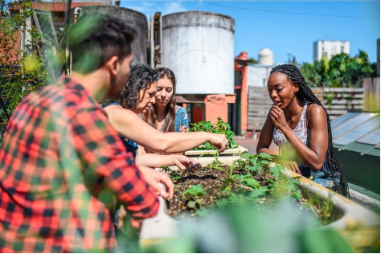
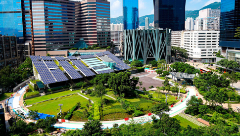

Lograr que las ciudades sean inclusivas, seguras, resilientes y sostenibles.

Actividades individuales
- Usar transporte público, bicicleta o caminar; reducir uso del coche privado.
- Participar en consultas públicas sobre planificación urbana y espacios verdes.
- Ahorrar energía y gestionar residuos domésticos correctamente.
Actividades escolares
- Proyectos de urbanismo escolar: mapas, propuestas para mejorar el entorno y movilidad.
- Actividades de embellecimiento comunitario y creación de espacios verdes.
- Programas educativos sobre resiliencia ante desastres y seguridad comunitaria.

Actividades empresariales
- Promover movilidad sostenible entre empleados y clientes (bicicletas, teletrabajo).
- Diseñar instalaciones con criterios de eficiencia y acceso para todos.
- Participar en planificación urbana y financiar proyectos de infraestructuras sostenibles.